Three little gifts
今日はどれを1つ開けよう
全部やらなくても大丈夫です。お子さんが気になった扉から、ちょっとだけ開けてみてください。
Let's make it together
チョコトナカイをつくろう
クッキング動画は準備中です
作り方と、親子で使える英語の声かけをご紹介します。
公開まで少しお待ちください。
材料と使うもの
材料
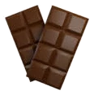
板チョコ 2枚
マシュマロ（大）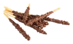
チョコスティックポッキー・小枝など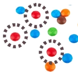
カラフルチョコ（赤色）M&M・マーブルチョコなど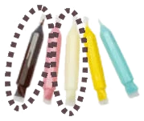
チョコペン（茶と白）
ほかに使うもの
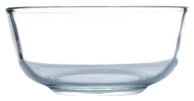
耐熱ボウル- 電子レンジ
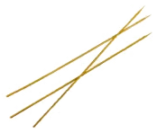
竹串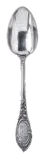
スプーン
つくり方
-
板チョコを手で小さく割って、耐熱ボウルに入れる
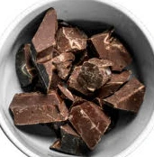
Let’s break the chocolate! Oh, it’s hard. Let me help?
チョコを砕いてみよう！固いね！手伝う？
-
ラップをせずに、500Wの電子レンジで1分半加熱する
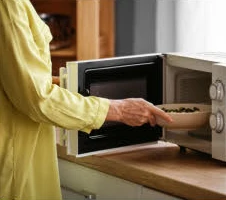
Place the bowl in the microwave. Look! What happens?
ボウルを電子レンジに入れるよ。見て！何が起きるかな？
-
スプーンでよく混ぜ、もし溶けていなければ、もう10秒程、加熱する
Stir it well! Has it melted well enough?
よくかき混ぜて〜！しっかり溶けてるかな？
-
マシュマロを竹串にさして、溶かしたチョコレートをくぐらせる
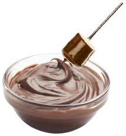
Stick a marshmallow on a stick and dip into the chocolate.
マシュマロを串にさして、チョコを付けよう！
-
トナカイの目を白と茶のチョコペンで描く
Let’s draw the eyes and nose of the reindeer. So cute!
トナカイの目を描こうね。かわいい〜！
-
2本のチョコスティック（小枝・ポッキーなど）を上にさして、角を作る
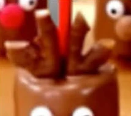
Place two sticks for the antlers. These are so cool.
トナカイの角を作ろう。かっこいいね〜。
-
赤いM&Mを鼻の上に置く
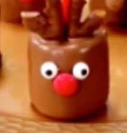
Place a red chocolate for a nose. It looks Rudolph!
赤いチョコで鼻を作ると…赤鼻のトナカイだ！
Christmas word cards
絵といっしょに
ことばをおぼえよう
おうちの中で見つけたら、カードと同じ英語を声に出してみてください。ここでは16語のうち8語をご紹介。すべての言葉は印刷用PDFで楽しめます。
Can you count them?
クリスマスの絵を
いくつ見つけられるかな
サンタとトナカイ。リボンと星。見つけたら、指をさしながら数えます。
さがすのは この10こ
-
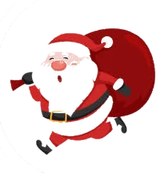
Santa Claus -
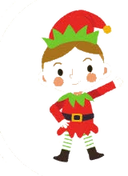
Elf -
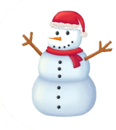
Snowman -
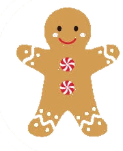
Gingerbread man -
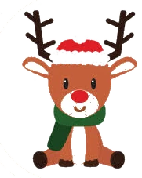
Reindeer - Stocking
- Bell
- Candy cane
- Bow
- Star
Print and play
紙に印刷すると
遊びがひろがります
レシピを見ながらつくる。ワードカードを切って遊ぶ。カウントゲームに書き込む。おうちに合う使い方を選んでください。
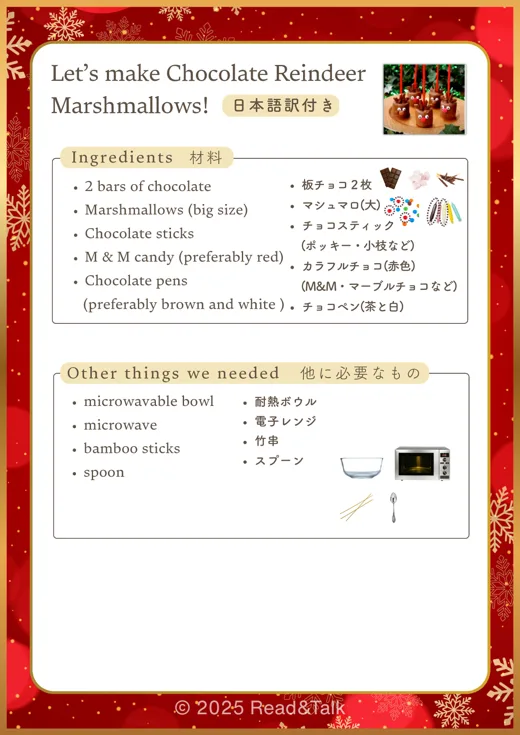
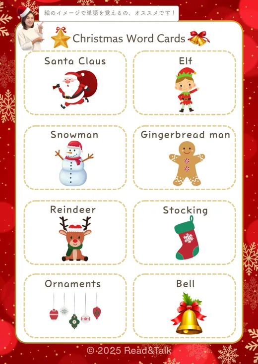
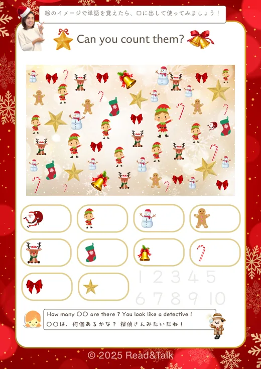
印刷するとこんな紙になります。A4サイズで全9ページです。
印刷用PDFを開く